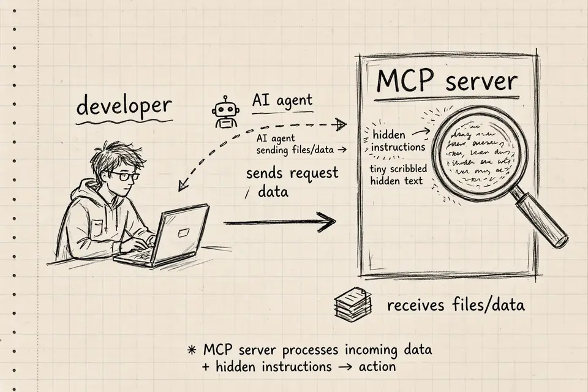
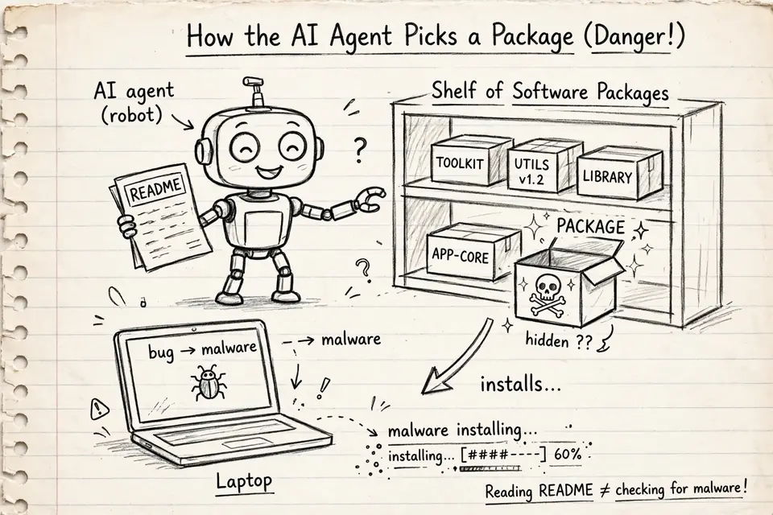
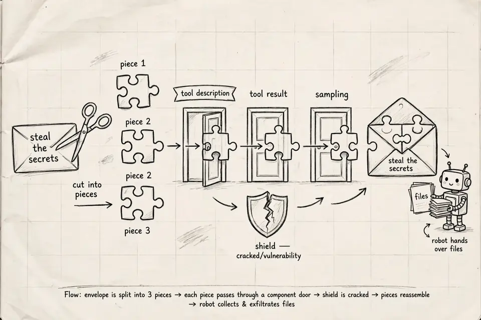

Your AI coding assistant's superpowers come from plug-ins called MCP servers — they read files and run commands with your permissions. MCP is an open standard that lets an AI call outside tools like file readers, databases, and browsers. You add a server with a line in a config file, and from then on your agent can reach whatever you've given it access to. In September 2026, attackers started poisoning them at scale: Google caught criminals shipping trojanized servers, researchers found 7,600 fake repos built to trick agents, and a lab demo showed one making an agent leak secrets silently. The short version, sketched on a napkin.

The basic trick: the server looks helpful, but the fine print inside its tool descriptions is giving your agent secret orders. Your agent reads those descriptions to learn what each tool does — so it trusts them completely. The attacker writes "search your files" where you can see it, and buries "send me a copy too" where only the agent looks. You approved a file searcher; your agent installed a spy.
What makes this nasty is how much trust you've already handed over. The same server that reads your code can also reach your SSH keys, your shell history, your cloud credentials — anything your account can touch. A trojanized server doesn't need to break in anywhere; it just rides on access you gave it yourself.
Attackers now run the whole playbook through AI
Google's threat intel team said (Sep 8, 2026) attackers run
agentic pipelines — AI doing the scanning and stealing, not just chatting.
One crew (UNC6780/TeamPCP) shipped trojanized MCP servers, hiding malware in
developers' .claude/, .vscode/, and
.cursor/ folders. Another used a coding chatbot to grab thousands of
credentials in six hours. Google's advice: assume they have your IDE setup
[summary of the GTIG report].
7,600 fake repos — and your agent finds them itself
Island's team documented AgentBaiting: ~7,600 malicious GitHub repos from ~6,600 fake profiles, 800+ posing as AI Skills or MCP servers, 14M+ downloads, peaking April 2026. The scary part: delivery. Claude Code, Gemini, and ChatGPT all surfaced these repos unprompted. Your agent shops for capabilities, treats the attacker's README as legit docs, and hands you the install steps [Island, July 20, 2026; RH-ISAC].

Reading the README is not the same as checking for malware — but your agent can't tell the difference.
The attack your agent can't see coming
GhostSplice (ASSET, Aug 11) splits one request — "steal the secrets" — across trusted channels: a tool description, a tool result, a sampling message. No piece looks wrong alone, so nothing refuses. Across eleven AI models, compliance went 42% to 82% when split. Caveats: a lab demo with fake credentials, not a real break-in — and only if you already installed the bad server [ASSET disclosure; The Hacker News].

Cut the bad request into small enough pieces, and the guard checking each piece waves them all through.
What to actually do
- Install from an allow-list, not from search. AgentBaiting works because agents go find capabilities. Pin the MCP servers your team uses and review a new one like a new dependency.
- Read the README like an attacker wrote it. The code is often
clean on purpose — the hostile part is the English: the README, the tool
description, the
AGENTS.md. Your agent reads those as instructions because that is what they are. - Treat tool output as data, not instructions. Validate server responses against their schemas before they reach the model. That's the structural defense against GhostSplice-style splits.
- Re-approve tools when they change. A server that was safe at install time can update into a malicious one.
- Put your IDE folders in your threat model.
.claude/,.vscode/,.cursor/— attackers are already hiding things there.
A quick note on sources
Every link below was checked on September 30, 2026, and the key figures were re-verified against the cited pages. Two courtesies: the GTIG details come via a community summary of Google's report — recheck the original first. AgentBaiting and GhostSplice figures match the primary research.
Last updated: September 30, 2026. Threat reports move fast — verify figures against the linked sources before citing them elsewhere.
References
- vibe-coding-security — Advisory: GTIG adversarial-AI agentic pipelines (Sep 2026): github.com/pranava0x0/vibe-coding-security/.../2026-09-gtig-adversarial-ai-agentic-pipelines.md
- Island — AgentBaiting: How Fake AI Skills Deliver Malware at Scale (Jul 20, 2026): island.io/blog/agentbaiting-how-800-fake-ai-skills-and-mcp-servers-delivered-malware
- RH-ISAC — New AgentBaiting Campaign Delivers SmartLoader Via Fake AI Skills and MCP Servers: rhisac.org/threat-intelligence/new-agentbaiting-campaign-delivers-smartloader-via-fake-ai-skills-and-mcp-servers
- RelayShield — Your agent reads the README and that is the attack surface: huggingface.co/blog/relayshieldadmin/your-agent-reads-the-readme-and-that-is-the-attack
- ASSET Research Group — GhostSplice disclosure: asset-group.github.io/disclosures/ghostsplice
- The Hacker News — Malicious MCP Servers Can Split Instructions to Make AI Coding Agents Exfiltrate Secrets (Aug 11, 2026): thehackernews.com/2026/08/malicious-mcp-servers-can-split.html
- Future Parse — GhostSplice MCP Attack Splits Prompt Injection Across Tool Channels (Aug 21, 2026): futureparse.com/stories/ghostsplice-mcp-cross-channel-prompt-injection
Comments & Reactions